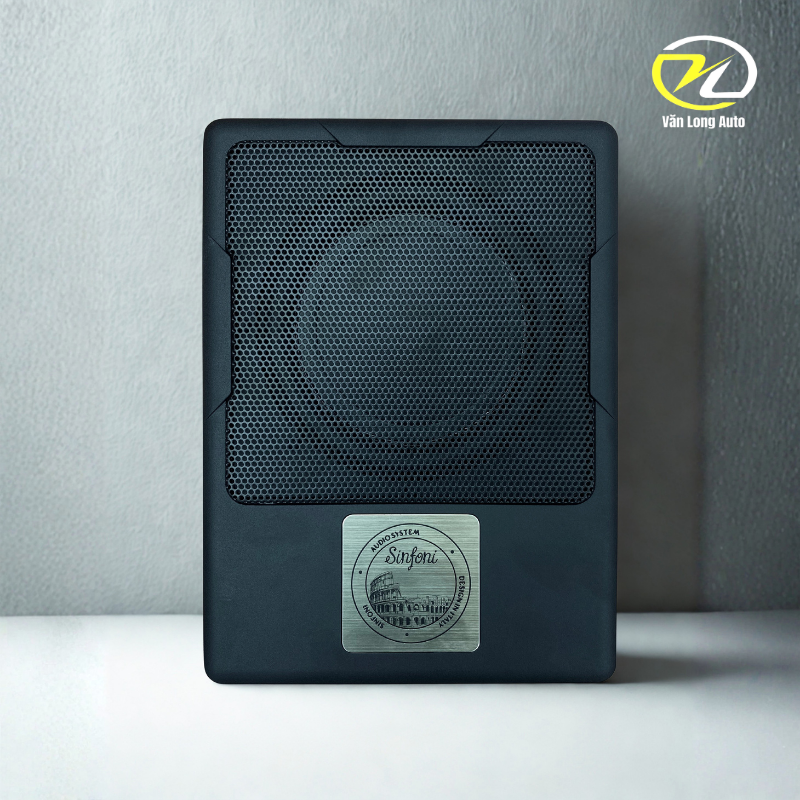
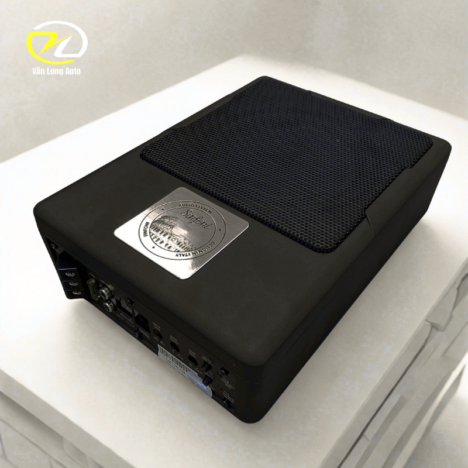
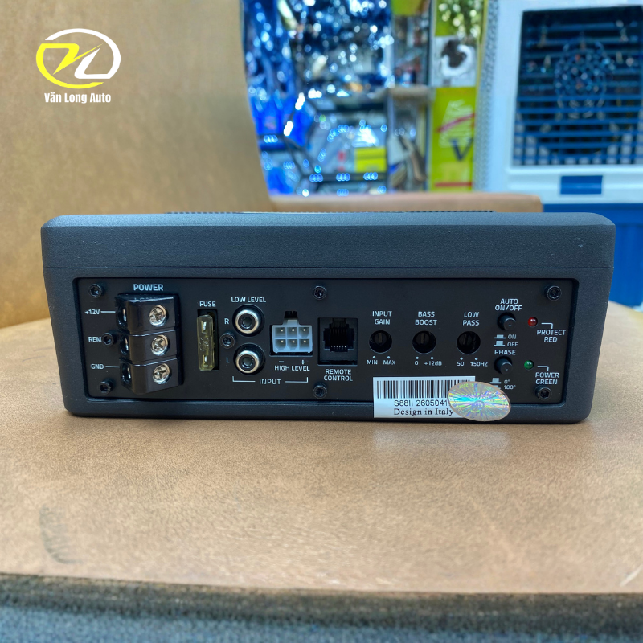

Tổng quan Sinfoni S88
Sinfoni S88 là loa sub điện gầm ghế hướng tới cấu hình âm thanh gọn gàng nhưng vẫn cần dải bass có lực. Thiết kế nhỏ giúp tiết kiệm không gian, trong khi ampli tích hợp giúp giảm số lượng thiết bị rời.

Âm trầm sâu, phù hợp nhiều thể loại nhạc
Củ loa 6.5 inch hoạt động trong dải 27Hz–150Hz, kết hợp công suất RMS 160W và Max 450W để bổ sung phần trầm còn thiếu cho hệ thống loa trên xe.

Độ nhạy cao, dễ kiểm soát
Độ nhạy 95dB giúp sub đáp ứng rõ hơn ở nhiều mức âm lượng. Bộ sản phẩm còn có nút điều chỉnh mức âm lượng để người dùng kiểm soát lượng bass phù hợp với từng bài nhạc.

Bộ sản phẩm đi kèm
- 01 loa sub điện Sinfoni S88.
- Dây tín hiệu kết nối với đầu phát.
- Nút chỉnh mức âm lượng.
- Phụ kiện cố định loa khi lắp đặt.
Lắp đặt & tư vấn cấu hình
Trước khi thi công, Văn Long Auto sẽ kiểm tra hệ thống âm thanh nguyên bản, không gian dưới ghế và nguồn điện để lựa chọn phương án phù hợp.
- Kiểm tra vị trí lắp và khoảng trống thực tế của từng dòng xe.
- Đi dây gọn gàng, ưu tiên an toàn hệ thống điện.
- Cân chỉnh mức bass sau khi hoàn thiện.
- Tư vấn theo gu nghe nhạc và cấu hình loa đang sử dụng.